A Linked List is a linear data structure consisting of a collection of elements called nodes, where each node contains data and one or more references to other nodes. Unlike array, a linked list does not require its elements to occupy contiguous memory locations. Instead, elements are logically connected through references (pointers).
Linked lists are particularly useful for understanding dynamic memory allocation and pointer manipulation.
Linked list are used in stacks, queues, graph representation, hast tables and cache implementations.
Consider a linked list containing four integers: 10, 20, 30 and 40.
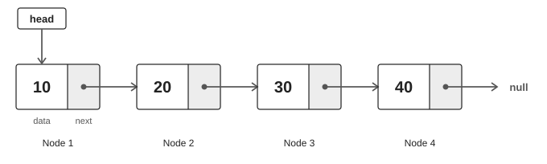
Each node stores a value and a reference to the next node. The last node points to null.
A node in a singly linked list has two components:
The linked list itself maintains a head reference and may also maintain a tail reference and a size counter.
Java representation of a node
public class Node<T> {
public T data;
public Node<T> next;
public Node(T data) {
this.data = data;
this.next = null;
}
}Creating and connecting nodes manually:
Node<Integer> first = new Node<Integer>(10);
Node<Integer> second = new Node<Integer>(20);
Node<Integer> third = new Node<Integer>(30);
first.next = second;
second.next = third;
Node<Integer> head = first;The resulting structure is:
head → 10 → 20 → 30 → nullIn Java, next is an object reference rather than a directly manipulable memory address.
Array — contiguous storage of elements
Illustrative memory addresses for an array of 4-byte integers.
Linked list — independently allocated nodes
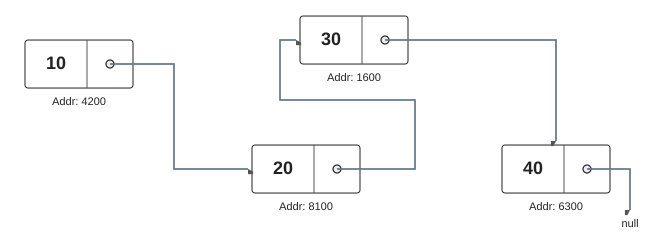
The addresses are conceptual; Java’s JVM manages actual object placement and may move objects during garbage collection.
| Characteristic | Array | Linked list |
|---|---|---|
| Memory layout | Contiguous element storage | Independently allocated nodes |
| Size | Fixed for a basic array | Dynamic |
| Random access | O(1) | O(n) |
| Search, unsorted | O(n) | O(n) |
| Insertion at beginning | O(n) | O(1) |
| Deletion at beginning | O(n) | O(1) |
| Memory overhead | Lower | Higher |
| CPU cache locality | Usually good | Usually poor |
| Resizing | Requires a new array | Not required |
| Reverse traversal | Direct indexing | Depends on list type |
Although linked lists have efficient pointer-based insertion and deletion, locating the required node may still take O(n) time. This distinction is important in real-world performance.
Singly linked list (SLL)
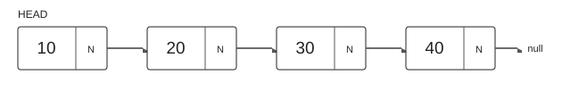
Each node contains a next reference. Traversal is possible only in the forward direction.
Doubly linked list (DLL)
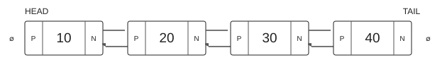
Each node contains prev and next references, allowing traversal in both directions.
Circular singly linked list (CSLL)
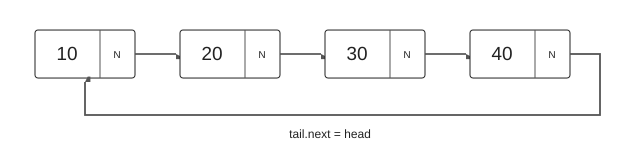
The last node points back to the first node instead of null.
Circular doubly linked list (CDLL)
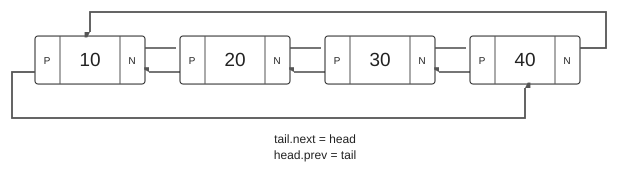
Combines bidirectional traversal with circular connectivity.
The following animation demonstrates how three references (prev, current and next) are used to reverse a linked list without losing any nodes.
Reverse a singly linked list
Java implementation
public Node<T> reverse(Node<T> head) {
Node<T> prev = null;
Node<T> current = head;
while (current != null) {
Node<T> next = current.next; Preserve the remaining list
current.next = prev; Reverse the current link
prev = current; Advance both references
current = next;
}
return prev;
}The document contains comprehensive explanations of the following topics.
| Chapter | Topics covered |
|---|---|
| 1. Fundamentals | Nodes, references, memory allocation, internal representation |
| 2. Types | Singly, doubly, circular, sentinel, intrusive and unrolled lists |
| 3. Operations | Insertion, deletion, searching, traversal and pointer manipulation |
| 4. Singly linked list | Complete generic Java implementation from scratch |
| 5. Doubly linked list | Complete generic Java implementation from scratch |
| 6. Circular linked list | Java implementation and sentinel nodes |
| 7. Complexity | Time complexity, space complexity and memory overhead |
| 8. Algorithms | Eleven important linked-list algorithms with Java code |
| 9. Java Collections | Internal behavior and usage of java.util.LinkedList |
| 10. Applications | LRU cache, stack, queue, scheduling, hashing and graphs |
| 11. Implementation concerns | Concurrency, advantages, disadvantages and common mistakes |
| 12. Practice | Interview questions, answers and exercises |
Interactive animations included in the document
The HTML document includes an interactive linked-list playground with customizable values and indices, automatic playback, previous/next controls and SVG pointer visualizations for:
Algorithms implemented
| Algorithm | Time | Auxiliary space |
|---|---|---|
| Iterative reversal | O(n) | O(1) |
| Recursive reversal | O(n) | O(n) |
| Find middle node | O(n) | O(1) |
| Detect cycle | O(n) | O(1) |
| Find cycle starting point | O(n) | O(1) |
| Nth node from end | O(n) | O(1) |
| Merge two sorted lists | O(m+n) | O(1) |
| Merge sort | O(n log n) | O(log n) |
| Find intersection | O(m+n) | O(1) |
| Remove sorted duplicates | O(n) | O(1) |
| Palindrome detection | O(n) | O(1) |
A linked list is a sequence of independently allocated nodes connected by references. Each node holds a value and at least one link. The list stores an entry reference, head; a tail reference and a size counter are optional optimizations.
The head points to the first node. The tail points to the last node; tail.next is null.
public class Node<T> {
T data;
Node<T> next;
Node(T data) { this.data = data; }
}
Node<Integer> a = new Node<>(10);
Node<Integer> b = new Node<>(20);
Node<Integer> c = new Node<>(30);
a.next = b;
b.next = c;
Node<Integer> head = a;Node identity is different from data equality: two nodes containing 10 can be separate objects. Assigning Node<Integer> x = a copies a reference, not the node. A change to x.next is visible through a.next.
head = tail = null, size 0.head == tail, and head.next == null for a linear singly linked list.Physical vs logical order
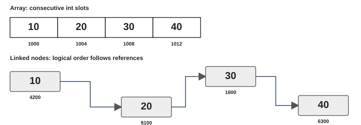
Illustrative addresses only. Java does not expose raw object addresses; garbage collection may relocate objects.
Arrays of primitives store their values inline; arrays of object references store contiguous reference slots, not necessarily contiguous objects. Linked nodes add references and object overhead and commonly have weaker cache locality.
Singly linked list
One next link per node. Forward traversal only; inexpensive head operations.
Singly linked list. N = next; P = previous.
Doubly linked list
Both previous and next links. Bidirectional navigation and O(1) removal given the node itself.
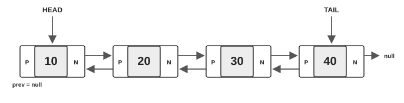
Doubly linked list. N = next; P = previous.
Circular Singly linked list
The last node links back to the head. Useful for round-robin processing; traversal must stop after returning to the start.
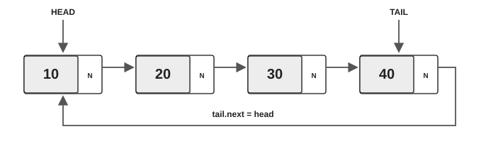
Circular singly linked list. N = next; P = previous.
Circular Doubly linked list
Both directions form a ring. Often implemented with a sentinel node to simplify boundaries.
Circular doubly linked list. N = next; P = previous.
Other variants
Sentinel/dummy: an extra non-data node removes many head/tail special cases. Unrolled: each node stores a small array of elements to improve locality. Intrusive: the link fields live inside the object being stored. Skip list: extra levels of forward links give expected logarithmic search in sorted data.
Choose an operation and step through the actual link changes. The lab models a linear singly linked list with stable node identities. Its intermediate states intentionally show detached nodes or temporarily stale head/tail references.
Pointer playground
Apply final list commits a completed operation and prepares the next one against that list. For readability, the playground limits lists to 8 nodes.
Traversal and search
Start at head; follow next until null. Searching by value returns the first matching node/index or a failure indicator. Both are O(n) time and O(1) auxiliary space.
for (Node<Integer> cur = head; cur != null; cur = cur.next) {
System.out.println(cur.data);
}Insert at the head
Set the new node’s next to the old head, then replace head. If the list was empty, tail must also become the new node.
After inserting 5: new.next = oldHead; head = new.
Insert after a known node
Save the successor by assigning newNode.next = prev.next first; then write prev.next = newNode. Reversing these assignments without saving the old link can create a self-loop and lose the suffix.
Node<Integer> newNode = new Node<>(25);
newNode.next = prev.next;
prev.next = newNode;
If prev was tail, tail = newNode.Delete a node
For a singly linked list, deletion normally requires its predecessor. Redirect the predecessor to the victim’s successor. For head deletion, move head forward. If removing the final node, update tail. Clear detached links when appropriate to avoid unnecessary retention.
Node<Integer> victim = prev.next;
prev.next = victim.next;
victim.next = null; If victim was tail, tail = prev.Index-based access
Unlike an array, you cannot calculate a node address from its index. To reach index k, follow k links starting at head. A doubly linked list can traverse from the closer end when its size is known.
Complexity rule: the pointer rewrite is O(1); finding the position can be O(n). Appending is O(1) only if a tail reference is maintained.
Generic, null-tolerant, maintains head, tail and size. All index operations are bounds checked. Save as SinglyLinkedList.java.
public class SinglyLinkedList<T> {
private static class Node<T> {
T data;
Node<T> next;
Node(T data) { this.data = data; }
}
private Node<T> head, tail;
private int size;
public int size() { return size; }
public boolean isEmpty() { return size == 0; }
public void addFirst(T data) {
Node<T> n = new Node<>(data);
n.next = head;
head = n;
if (tail == null) tail = n;
size++;
}
public void addLast(T data) {
Node<T> n = new Node<>(data);
if (tail == null) head = n;
else tail.next = n;
tail = n;
size++;
}
public void add(int index, T data) {
if (index < 0 || index > size)
throw new IndexOutOfBoundsException(index);
if (index == 0) { addFirst(data); return; }
if (index == size) { addLast(data); return; }
Node<T> prev = nodeAt(index - 1);
Node<T> n = new Node<>(data);
n.next = prev.next;
prev.next = n;
size++;
}
private Node<T> nodeAt(int index) {
if (index < 0 || index >= size)
throw new IndexOutOfBoundsException(index);
Node<T> cur = head;
for (int i = 0; i < index; i++) cur = cur.next;
return cur;
}
public T get(int index) { return nodeAt(index).data; }
public T set(int index, T data) {
Node<T> n = nodeAt(index);
T old = n.data;
n.data = data;
return old;
}
public T removeFirst() {
if (head == null) throw new NoSuchElementException();
Node<T> old = head;
head = old.next;
old.next = null;
if (head == null) tail = null;
size--;
return old.data;
}
public T removeLast() {
if (size == 0) throw new NoSuchElementException();
return remove(size - 1);
}
public T remove(int index) {
if (index < 0 || index >= size)
throw new IndexOutOfBoundsException(index);
if (index == 0) return removeFirst();
Node<T> prev = nodeAt(index - 1);
Node<T> victim = prev.next;
prev.next = victim.next;
if (victim == tail) tail = prev;
victim.next = null;
size--;
return victim.data;
}
public int indexOf(T value) {
int i = 0;
for (Node<T> cur = head; cur != null; cur = cur.next, i++)
if (Objects.equals(cur.data, value)) return i;
return -1;
}
public boolean contains(T value) { return indexOf(value) >= 0; }
public boolean removeValue(T value) {
Node<T> prev = null, cur = head;
while (cur != null && !Objects.equals(cur.data, value)) {
prev = cur;
cur = cur.next;
}
if (cur == null) return false;
if (prev == null) { removeFirst(); return true; }
prev.next = cur.next;
if (cur == tail) tail = prev;
cur.next = null;
size--;
return true;
}
public void reverse() {
Node<T> prev = null, cur = head;
tail = head;
while (cur != null) {
Node<T> next = cur.next;
cur.next = prev;
prev = cur;
cur = next;
}
head = prev;
}
public void clear() { head = tail = null; size = 0; }
@Override public String toString() {
StringBuilder out = new StringBuilder("[");
for (Node<T> cur = head; cur != null; cur = cur.next) {
if (cur != head) out.append(", ");
out.append(cur.data);
}
return out.append("]").toString();
}
public static void main(String[] args) {
SinglyLinkedList<Integer> list = new SinglyLinkedList<>();
list.addLast(10);
list.addLast(20);
list.addFirst(5);
list.add(2, 15);
System.out.println(list); [5, 10, 15, 20]
list.remove(1);
list.reverse();
System.out.println(list); [20, 15, 5]
System.out.println(list.get(1)); 15
System.out.println(list.size()); 3
}
}Invariants after each public method: size counts reachable nodes; empty means both endpoints are null; otherwise tail is reachable from head and tail.next is null. This implementation is not thread-safe and does not implement the full Java List interface.
A doubly linked list makes backward navigation possible. With the node already known, removal is O(1), including tail removal. For a middle insertion or removal, both adjacent links must be updated.
Doubly linked list. N = next; P = previous.
n.prev = left; Insert n between left and right (both may be null at boundaries).
n.next = right;
if (left != null) left.next = n; else head = n;
if (right != null) right.prev = n; else tail = n;public class DoublyLinkedList<T> {
private static class Node<T> {
T data;
Node<T> prev, next;
Node(T data) { this.data = data; }
}
private Node<T> head, tail;
private int size;
public int size() { return size; }
public boolean isEmpty() { return size == 0; }
private void linkBetween(T data, Node<T> left, Node<T> right) {
Node<T> n = new Node<>(data);
n.prev = left; n.next = right;
if (left == null) head = n; else left.next = n;
if (right == null) tail = n; else right.prev = n;
size++;
}
private T unlink(Node<T> n) {
Node<T> left = n.prev, right = n.next;
if (left == null) head = right; else left.next = right;
if (right == null) tail = left; else right.prev = left;
n.prev = n.next = null;
size--;
return n.data;
}
private Node<T> nodeAt(int i) {
if (i < 0 || i >= size) throw new IndexOutOfBoundsException(i);
if (i < size / 2) {
Node<T> cur = head;
for (int k = 0; k < i; k++) cur = cur.next;
return cur;
}
Node<T> cur = tail;
for (int k = size - 1; k > i; k--) cur = cur.prev;
return cur;
}
public void addFirst(T data) { linkBetween(data, null, head); }
public void addLast(T data) { linkBetween(data, tail, null); }
public void add(int i, T data) {
if (i < 0 || i > size) throw new IndexOutOfBoundsException(i);
if (i == size) { addLast(data); return; }
Node<T> right = nodeAt(i);
linkBetween(data, right.prev, right);
}
public T get(int i) { return nodeAt(i).data; }
public T remove(int i) { return unlink(nodeAt(i)); }
public T removeFirst() {
if (head == null) throw new NoSuchElementException();
return unlink(head);
}
public T removeLast() {
if (tail == null) throw new NoSuchElementException();
return unlink(tail);
}
public void printBackward() {
for (Node<T> n = tail; n != null; n = n.prev)
System.out.print("{n.data} ");
System.out.println();
}
}Invariants: head.prev = null, tail.next = null and whenever x.next = y, y.prev = x. Searching by index takes O(min(i, n−1−i)) hops, still O(n) worst case.
A circular singly linked list can store only tail: head is tail.next. A one-element ring has tail.next == tail. Use a do-while traversal, bounded iteration or an explicit stopping condition; a null-based loop would never terminate.
Circular singly linked list. N = next; P = previous.
public class CircularLinkedList<T> {
private static class Node<T> {
T data; Node<T> next;
Node(T data) { this.data = data; }
}
private Node<T> tail;
private int size;
public int size() { return size; }
public void addFirst(T data) {
Node<T> n = new Node<>(data);
if (tail == null) { n.next = n; tail = n; }
else { n.next = tail.next; tail.next = n; }
size++;
}
public void addLast(T data) {
addFirst(data);
tail = tail.next;
}
public T removeFirst() {
if (tail == null) throw new NoSuchElementException();
Node<T> first = tail.next;
if (first == tail) tail = null;
else tail.next = first.next;
first.next = null;
size--;
return first.data;
}
public void rotate() {
if (tail != null) tail = tail.next;
}
public void print() {
if (tail == null) return;
Node<T> head = tail.next, cur = head;
do {
System.out.print("{cur.data} ");
cur = cur.next;
} while (cur != head);
System.out.println();
}
}Circular doubly linked list with sentinel
A sentinel is a special node that is never returned as a data element. Initially its next and prev point to itself. Inserting between any two adjacent nodes follows the same four assignments; deleting a real node uses two assignments. The sentinel is never removed.
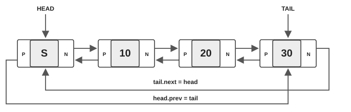
S represents the sentinel; the circular links connect the final node back to S. Head and tail labels here indicate traversal endpoints, not separate required fields.
sentinel.next = sentinel; Empty sentinel ring
sentinel.prev = sentinel;
n.prev = p.prev; Insert n before p (p may be sentinel)
n.next = p;
p.prev.next = n;
p.prev = n;
n.prev.next = n.next; Remove real node n (never remove sentinel)
n.next.prev = n.prev;
n.prev = n.next = null;| Operation | Singly (head + tail) | Doubly (head + tail) | ArrayList (dynamic array) |
|---|---|---|---|
| Read head / tail | O(1) | O(1) | O(1) |
| Get / set index i | O(i) → O(n) | O(min(i,n−1−i)) → O(n) | O(1) |
| Search unsorted | O(n) | O(n) | O(n) |
| Insert front | O(1) | O(1) | O(n) |
| Append | O(1) | O(1) | Amortized O(1); worst O(n) |
| Remove first | O(1) | O(1) | O(n) |
| Remove last | O(n) | O(1) | O(1) |
| Insert at arbitrary index | O(n) worst | O(n) worst | O(n) worst |
| Insert after known node | O(1) | O(1) | O(n) worst (known index) |
| Delete known node | O(1) with predecessor; otherwise O(n) | O(1) | O(n) worst (known index) |
| Reverse | O(n) | O(n) | O(n) |
| Total storage | O(n) | O(n) | O(n) |
For circular lists, head and tail insertion remain O(1) with tail access. Removing the tail of a singly circular list still requires its predecessor, so O(n). Circular doubly linked lists allow O(1) removal at either end.
Space for each singly node: payload or payload reference + one link + object metadata/alignment; doubly adds one link. Exact byte counts depend on JVM settings, compressed references, object layout and element type. An array stores slots together, so sequential scans are often much faster despite identical O(n) complexity.
Amortized vs worst case: dynamic arrays occasionally allocate a larger backing array and copy references, but repeated appends average constant cost. A linked list allocates a separate node per insertion.
The following static methods use the simple integer Node below. Unless otherwise stated, assume an acyclic linear list and exclusive access to nodes. Algorithms that modify links return the new head when necessary; update any wrapper list’s tail and size accordingly.
public static class Node {
int val;
Node next;
Node(int val) { this.val = val; }
}Reverse a linked list iteratively
Maintain prev (reversed prefix), cur (current node), and next (saved suffix). Save next before changing the link. Each node is processed once. Time O(n), auxiliary space O(1).
static Node reverse(Node head) {
Node prev = null, cur = head;
while (cur != null) {
Node next = cur.next;
cur.next = prev;
prev = cur;
cur = next;
}
return prev;
}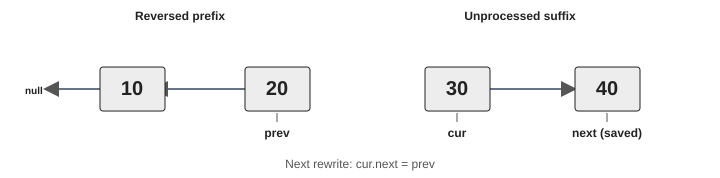
After processing 10 and 20, the two chains are separate. The saved suffix prevents data loss.
Recursive reversal
Reverse the suffix, redirect the successor to the current node, then terminate the old forward link. Time O(n); O(n) call stack. Java does not guarantee tail-call optimization, so prefer iteration for long lists.
static Node reverseRecursive(Node head) {
if (head == null || head.next == null) return head;
Node newHead = reverseRecursive(head.next);
head.next.next = head;
head.next = null;
return newHead;
}Find the middle node
Move slow one link and fast two. When fast reaches the end, slow is at the midpoint. For even lengths this version returns the second middle. Time O(n), space O(1).
static Node middle(Node head) {
Node slow = head, fast = head;
while (fast != null && fast.next != null) {
slow = slow.next;
fast = fast.next.next;
}
return slow;
}Floyd’s cycle detection (tortoise and hare)
Inside a cycle of length λ, fast gains one position on slow each iteration modulo λ. Thus they must meet within at most λ iterations after both are in the cycle. If there is no cycle, fast reaches null. Compare references, not values.
Cycle detection animation
static boolean hasCycle(Node head) {
Node slow = head, fast = head;
while (fast != null && fast.next != null) {
slow = slow.next;
fast = fast.next.next;
if (slow == fast) return true;
}
return false;
}
static Node cycleStart(Node head) {
Node slow = head, fast = head;
while (fast != null && fast.next != null) {
slow = slow.next;
fast = fast.next.next;
if (slow == fast) {
slow = head;
while (slow != fast) {
slow = slow.next;
fast = fast.next;
}
return slow;
}
}
return null;
}Why the reset works: let μ be the distance from head to cycle entry and λ the cycle length. At the meeting after t slow steps, fast has traveled 2t, so t is a multiple of λ. The meeting offset is (t−μ) modulo λ. Moving μ steps from the meeting reaches the entry, just as moving μ steps from head does. Both algorithms use O(n) time and O(1) space, where n counts distinct reachable nodes.
Nth node from the end (one pass)
Advance fast by n links, then move both pointers together. When fast reaches null, slow is the nth node from the end. n is 1-based.
static Node nthFromEnd(Node head, int n) {
if (n <= 0) throw new IllegalArgumentException();
Node slow = head, fast = head;
for (int i = 0; i < n; i++) {
if (fast == null) throw new IllegalArgumentException();
fast = fast.next;
}
while (fast != null) {
slow = slow.next;
fast = fast.next;
}
return slow;
}Merge two sorted lists
A dummy node simplifies the first insertion. Choose the smaller front node and move its input pointer. Append the remaining suffix. This destructive merge assumes disjoint acyclic sorted lists. O(m+n) time and O(1) extra space.
static Node merge(Node a, Node b) {
Node dummy = new Node(0), tail = dummy;
while (a != null && b != null) {
if (a.val <= b.val) {
tail.next = a; a = a.next;
} else {
tail.next = b; b = b.next;
}
tail = tail.next;
}
tail.next = a != null ? a : b;
return dummy.next;
}Merge sort
Split the list into halves using two pointers; recursively sort both halves and merge. Use fast = head.next to guarantee a proper split for two nodes. O(n log n) time, O(log n) recursion space with iterative merge. Bottom-up merge sort can avoid recursive stack space.
static Node mergeSort(Node head) {
if (head == null || head.next == null) return head;
Node slow = head, fast = head.next;
while (fast != null && fast.next != null) {
slow = slow.next;
fast = fast.next.next;
}
Node right = slow.next;
slow.next = null;
return merge(mergeSort(head), mergeSort(right));
}Intersection of two lists
Intersection means the same node object, not just equal values. Switching each pointer to the other head when it reaches null cancels the difference in list lengths. O(m+n) time, O(1) extra space, assuming acyclic lists.
static Node intersection(Node a, Node b) {
Node p = a, q = b;
while (p != q) {
p = p == null ? b : p.next;
q = q == null ? a : q.next;
}
return p;
}Remove duplicates from a sorted list
Equal values are adjacent. Keep the first node of each run and bypass following duplicates. O(n) time, O(1) extra space. For unsorted lists, use a HashSet with O(n) expected time and O(n) extra space, or nested scans with O(n²) time.
static Node deduplicateSorted(Node head) {
Node cur = head;
while (cur != null && cur.next != null) {
if (cur.val == cur.next.val) cur.next = cur.next.next;
else cur = cur.next;
}
return head;
}Palindrome check with restoration
Find the end of the first half, reverse the second half, compare, and restore the original links even on mismatch. O(n) time, O(1) extra space.
static boolean isPalindrome(Node head) {
if (head == null || head.next == null) return true;
Node slow = head, fast = head;
while (fast.next != null && fast.next.next != null) {
slow = slow.next;
fast = fast.next.next;
}
Node second = reverse(slow.next);
slow.next = second;
Node p = head, q = second;
boolean equal = true;
while (q != null) {
if (p.val != q.val) { equal = false; break; }
p = p.next; q = q.next;
}
slow.next = reverse(second);
return equal;
}Remove nth node from end
Use a dummy node before head so deleting the actual head is not a special case. Move fast n steps, then both pointers until fast.next is null; slow is the predecessor. O(n) time, O(1) auxiliary space.
static Node removeNthFromEnd(Node head, int n) {
if (n <= 0) throw new IllegalArgumentException();
Node dummy = new Node(0);
dummy.next = head;
Node slow = dummy, fast = dummy;
for (int i = 0; i < n; i++) {
if (fast.next == null) throw new IllegalArgumentException();
fast = fast.next;
}
while (fast.next != null) {
fast = fast.next; slow = slow.next;
}
slow.next = slow.next.next;
return dummy.next;
}java.util.LinkedList<E> is a doubly linked implementation of List and Deque. It permits null elements and is not synchronized. Index-based methods traverse from whichever end is closer. ListIterator supports backward movement and efficient local insertion/removal.
LinkedList<Integer> list = new LinkedList<>();
list.add(10); [10]
list.addFirst(5); [5, 10]
list.addLast(20); [5, 10, 20]
list.add(1, 7); [5, 7, 10, 20]
list.remove(Integer.valueOf(10)); remove value, not index
System.out.println(list.getFirst()); 5
ListIterator<Integer> it = list.listIterator();
while (it.hasNext()) {
if (it.next() == 7) it.remove();
}| Method family | Empty behavior |
|---|---|
| getFirst / getLast / removeFirst / removeLast | Throws NoSuchElementException |
| peekFirst / peekLast / pollFirst / pollLast | Returns null |
| offerFirst / offerLast | Adds at the requested end; returns true for LinkedList |
| push / pop | Stack behavior at head; pop throws when empty |
Because null elements are allowed, a null returned by peek or poll can be ambiguous. Prefer avoiding null when using queue semantics. Also distinguish remove(1) (index 1) from remove(Integer.valueOf(1)) (value 1).
Do not loop by index
for (int i = 0; i < list.size(); i++) { O(n²): every get(i) traverses part of the list.
System.out.println(list.get(i));
}
for (Integer value : list) { O(n): the iterator follows each link once.
System.out.println(value);
}Iterators are fail-fast on a best-effort basis for unsupported structural modification; that is a bug-detection mechanism, not a thread-safety guarantee. Use the iterator’s own remove/add methods where supported.
LRU architecture
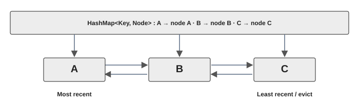
Hash lookup and list rewiring work together. A plain linked list alone would require linear key lookup.
Java’s LinkedHashMap already supports access-order iteration, which can implement an elementary fixed-capacity LRU cache. It is not thread-safe.
public class LruCache<K,V> extends LinkedHashMap<K,V> {
private int capacity;
public LruCache(int capacity) {
super(16, 0.75f, true); access order
if (capacity <= 0) throw new IllegalArgumentException();
this.capacity = capacity;
}
@Override protected boolean removeEldestEntry(Map.Entry<K,V> eldest) {
return size() > capacity;
}
}When to use a linked list
Useful when node handles or a positioned iterator are already available, splicing/reordering dominates, or implementing specialized intrusive structures. A singly list saves one reference per node; doubly lists make tail removal and backward movement efficient.
When to avoid it
For random access or ordinary append-and-scan workloads, prefer ArrayList. For most non-concurrent Java stack/queue/deque workloads, ArrayDeque is usually a better default because it avoids per-element node allocations and has good locality (it rejects null). Benchmark actual workloads before optimizing.
Concurrency
Multiple pointer assignments are not a single atomic operation. Concurrent writers can lose nodes, corrupt links or produce inconsistent size counters. Even volatile on next does not make compound operations atomic. Guard all reads/writes with a common lock, or choose a concurrent collection such as ConcurrentLinkedQueue, ConcurrentLinkedDeque or LinkedBlockingQueue according to semantics. Lock-free lists use CAS and careful publication, deletion and reclamation protocols; they are not equivalent to ordinary lists with atomic references.
Common mistakes
| Bug | Prevention |
|---|---|
| Losing suffix during insertion/reversal | Save the old successor before overwriting next. |
| Stale tail after removing final node | Update both endpoints on empty transition. |
| Accidental infinite traversal | Use null for linear lists and bounded/start-node termination for circular lists. |
| Comparing node data to detect intersection/cycle | Compare references (==). |
| Incorrect null equality | Use Objects.equals for generic data. |
| Wrong bounds | Insert: 0 ≤ i ≤ size; access/remove: 0 ≤ i < size. |
| Broken backward link | Maintain x.next.prev == x and x.prev.next == x where applicable. |
| O(n²) traversal | Use an iterator or follow next directly. |
| Unexpected mutations through aliases | Avoid exposing mutable nodes unnecessarily; document destructive algorithms. |
Test cases
Test empty and singleton lists, insert/remove at both ends, middle changes, duplicate and null values, reversing twice, out-of-bounds indices, and reuse after clear. Check structural invariants, not just printed values. For circular lists test one-node self-loops and rotation. For cycle detection test null, linear, self-loop, entry at head and entry in the middle.
Use these exercises to consolidate pointer reasoning. Try solving without allocating unnecessary nodes, then compare the complexity and edge cases.
The predecessor is needed to become the new tail; the tail pointer cannot navigate backwards.
The second assignment links newNode to itself, losing the original suffix unless it was saved separately.
Read its previous and next references and connect those neighbors directly, adjusting endpoints if necessary.
Finding the middle requires traversal; logarithmic comparisons do not imply logarithmic total traversal time.
Floyd’s slow/fast pointers meet if the cycle exists; otherwise fast reaches null.
Contiguous slots favor cache lines, prefetching, and lower allocation overhead; linked traversal follows dependent references.
Maintain head and tail; enqueue at tail and dequeue at head. Reset tail when the final node is dequeued.
Practice progression
Beginner: traversal, insertion, removal, count, find maximum. Intermediate: reverse, middle, kth-from-end, merge, cycle detection. Advanced: merge sort, reverse in k groups, copy random-pointer list, LRU cache, flatten multilevel doubly linked list, design a concurrent queue.
Core mental model: always track node identity, save links before overwriting them, and preserve the list’s endpoint and reachability invariants.